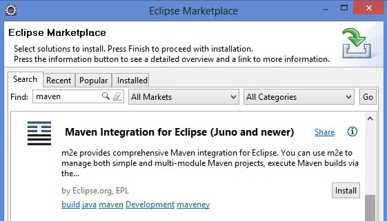

Honey Badger
Hi to GitHub Pages
This automatic page generator is the easiest way to create beautiful pages for all of your projects.
Android + Maven
First you should to get ready your Android environment. You can set this following the next link: http://developer.android.com/sdk/index.html. Honey Badger framework recommend to use a manual Android installation to avoid miss some important steps like know where is you android sdk.
After this, you should install Maven and the Android Conector for maven into your eclipse. Select Help -> Eclipse Marketplace, and search for maven...
Now install the android conector for maven. Select Help -> Eclipse Marketplace, and search android m2e.

We almost done! Now you just need to create a simple android project y after that convert to a maven project: right click over the project and select Configure -> Convert to Maven Project.
Into the pom.xml copy and paste the next description.
<project xmlns="http://maven.apache.org/POM/4.0.0" xmlns:xsi="http://www.w3.org/2001/XMLSchema-instance" xsi:schemaLocation="http://maven.apache.org/POM/4.0.0 http://maven.apache.org/xsd/maven-4.0.0.xsd">
<modelVersion>4.0.0</modelVersion>
<groupId>de.akquinet.android.archetypes</groupId>
<artifactId>android-quickstart</artifactId>
<packaging>apk</packaging>
<version>1.0.10</version>
<build>
<sourceDirectory>src</sourceDirectory>
<plugins>
<plugin>
<groupId>org.apache.maven.plugins</groupId>
<artifactId>maven-compiler-plugin</artifactId>
<configuration>
<source>1.6</source>
<target>1.6</target>
</configuration>
</plugin>
<plugin>
<groupId>com.jayway.maven.plugins.android.generation2</groupId>
<artifactId>android-maven-plugin</artifactId>
<configuration>
<sdk>
<path>${env.ANDROID_HOME}</path>
<platform>1.6</platform>
</sdk>
</configuration>
<extensions>true</extensions>
</plugin>
</plugins>
</build>
</project>
This is the basic information to configure your environment, now you can run and see your Hello World application.